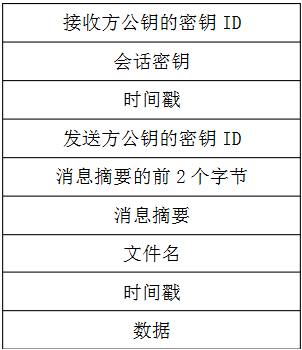
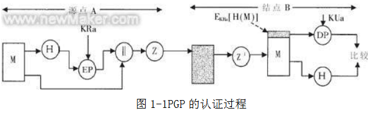

黄河科技学院 信息工程学院 宋典花

黄河科技学院 信息工程学院 宋典花
智游教育论文处理
上标
下标
随着互联网的快速发展，电子邮件和网络上的文件传输已经成为人们工作和生活中不可或缺的部分了。 电子邮件的安全性问题很突出。 可是随着对密码学的研究和对密码的破译,传统的加密方法已经不能够满足现代的要求,这样一种更加强大的加密算法的出现也成为一种必然。电子邮件在网络传输中数据是不加密处理。电子邮件的传送过程是邮件在网络上反复复制的过程，其网络传输路径不确定，很容易遭到黑客的窃取、篡改、冒用甚至恶意破坏，给收发双方带来麻烦。进行信息加密。
PGP是目前最流行的一种加密软件，它是一个基于RSA及AES等加密算法的加密软件系列它包含资料公钥&私钥加密，邮件加密与身份确认，硬盘及移动盘全盘密码保护，网络共享资料加密，PGP自解压文档创建，资料安全擦除等众多功能。
2000年前，人们就开始使用共享密码技术。1976年，Diffie-Hellman算法被提出。1978年，RSA——公开密钥算法被公开。 1991年，PGP 诞生，创始人是美国的 Phil Zimmermann。他的创造性在于他把RSA公匙体系的方便和传统加密体系的高速度结合起来，并且在数字签名和密匙认证管理机制上有巧妙的设计。因此PGP成为几乎最流行的公匙加密软件包。 很多个人和商业团体都经常使用它实现数据和电子邮件的保密性，并且很快就成为了安全电子邮件的标准。
PGP的出现与应用很好地解决了电子邮件的安全传输问题。将传统的对称性加密与公开密钥加密方法结合起来，兼备了两者的优点。PGP提供了一种机密性和鉴别的服务，支持1024位的公开密钥与128位的传统加密算法，可以用于军事目的，完全能够满足电子邮件对于安全性能的要求。

PGP(Pretty Good Privacy)，基于RSA公匙加密体系的邮件加密软件。能对邮件加上数字签名从而使收信人可以确认邮件的发送者，并能确信邮件没有被篡改。它可以可以提供一种安全的通讯方式，而事先并不需要任何保密的渠道用来传递密匙。它采用了一种RSA和传统加密的杂合算法，用于数字签名的邮件文摘算法，加密前压缩等，还有一个良好的人机工程设计。它的功能强大，有很快的速度。而且它的源代码是免费的。
PGP主要提供数字签名、机密性、压缩、基数64转换等安全服务。PGP采用的传统加密技术部分所使用的密钥称为“会话密钥”（sek）。每次使用时，PGP都随机产生一个128位的IDEA会话密钥，用来加密报文。公开密钥加密技术中的公钥和私钥则用来加密会话密钥，并通过它间接地保护报文内容。
PGP加密系统是采用公开密钥加密与传统密钥加密相结合的一种加密技术。它使用一对数学上相关的钥匙，其中一个（公钥）用来加密信息，另一个（私钥）用来解密信息

签名的步骤：
对报文可以同时使用两个服务。首先为明文生成签名并附加到报文首部；然后使用CAST-128(或IDEA、3DES)对明文报文和签名进行加密，再使用RSA(或ElGamal)对会话密钥进行加密。在这里要注意次序，如果先加密再签名的话，别人可以将签名去掉后签上自己的签名，从而篡改签名
PGP在加密前进行预压缩处理，PGP内核使用PKZIP算法压缩加密前的明文。一方面对电子邮件而言，压缩后再经过radix-64编码有可能比明文更短，这就节省了网络传输的时间和存储空间；另一方面，明文经过压缩，实际上相当于经过一次变换，对明文攻击的抵御能力更强。
当使用PGP时，至少传输报文的一部分需要加密，因此部分或全部的结果报文由任意8bit字节流组成。但由于很多的电子邮件系统只允许使用由ASCII正文组成的块，所以PGP提供了radix-64(就是MIME的BASE 64格式)转换方案，将原始二进制流转化为可打印的ASCII字符。
电子邮件设施经常受限于最大报文长度(50000个)八位组的限制。超过这个值，报文将分成更小的报文段，每个段单独发送。分段是在所有其他的处理(包括radix-64转换)完成后才进行的，因此，会话密钥部分和签名部分只在第一个报文段的开始位置出现一次。在接收端，PGP必须剥掉所在的电子邮件首部，并且重新装配成原来的完整的分组。
现在您应该对 PGP 已经有个大概的了解了，让我们看看 PGP 实际上具有哪些功能： PGP使用加密以及效验的方式，提供了多种的功能和工具，帮助您保证您的电子邮件、文件、磁盘、以及网络通讯的安全。PGP 能够提供独立计算机 上的信息保护功能，使得这个保密系统更加完备。 PGP最核心的功能是：文件加密、通信加密和数字签名，包括电子邮件、任何储存起来的文件、还有即时通讯（例如 QQ 之类）。数据加密功能让使用者可以保护他们发送的信息─像是电子邮件─还有他们储存在计算机上的信息。文件和信息通过使用者的密钥，通过复杂的算法运算后编码，只有它们的接收人才能把这些文件和信息解码。
在写这篇轮主要是通过网络找到的资料，专业性比较强，资料比较少，借鉴的比较多。在找资料过程中学习了更多的知识。作为一个网络工程的学生其实，这样的做起来对以后找相关资料会更更有帮助。为期一学期的毕业论文已经接近尾声了，我的大三学习也即告一段落。对于PGP，信任管理不是基于一个全局的PKI，而是让用户自己自己建立自己的信任网，只是用小规模的用户群体，当用户增多的时候，管理会困难。PGP的认证模式采用的是分布式的，则使用事比较方便，适合于公共领域和内部网络用户之间的安全信息交流，而且它还保留了用户的个人电子邮件安全服务的选择。 某些版本的 PGP 加密软件支持 ADKs (额外解密密钥)，这允许攻击者通过非法增加一个密钥到受害者的公开密钥中。最终结果让所有发送到受害者的信件同时用非法的公开密钥加密后发送给攻击者，攻击者将用对应私有密钥解密信件获取内容，了解了PGP的相关知识，不难知道，这里应用到的知识和我们所学的网络安全中的密码学是相互关联的。其实平时里我们学时的东西都是息息相关的，只要把它们相互结合起来就会解决更多的问题，把问题解决的更完善。
1百度文库
2百度百科
3杨延双，张健标等 《TCP/IP协议分析及应用》 机械工业出版社，2007.2
pre预格式用法
(1)发送方创建消息
(2)用使用SHA-1生成消息的160bit散列值
(3)用发送方私钥的RSA加密散列值，将结果附在消息上 验证的步骤：
(4)接收方使用发送方的公开密钥，采用RSA解密和恢复散列值
(5)接收方为消息生成新的散列值，，并与被解密的散列值相比较。如果两者匹配，则消息作为已鉴别的消息而接收。